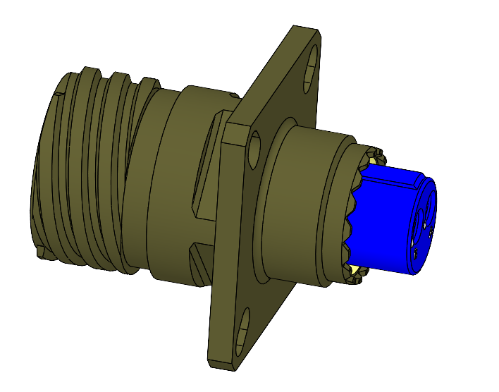

Mugunthan R / Mechanical Design Engineer
Fiber-optic connectors & rugged mechanical design.
Teraxis Part-time · Evenings & weekends
I develop ARINC 801, MPO and ruggedized optical connector families at Teraxis, with ongoing work on optical termini and a modelled expanded-beam connector for future manufacture.
My experience also includes RFoF enclosures, rugged chassis and precision mechanical assemblies at WaveOptix.

Selected Work / Teraxis
Optical Connector Development
Part-time mechanical design and development carried out during evenings and weekends. The project status is identified for each connector family.
01 / Teraxis / Part-time
Developed connector familyARINC 801
2, 4, 6, 8 and 12-channel plugs and receptacles
I developed the plug and receptacle family across five channel configurations, with successful development on the first attempt. The three CAD images show the 2-channel square-flange receptacle from the outside, at the mating face and in section.
- Plug and receptacle designs across all five channel configurations
- Connector shells, inserts, alignment and coupling interfaces
- Section views to review the internal component arrangement
02 / Teraxis / Part-time
Developed connector familyMPO Connectors
Multi-channel plugs and square-flange receptacles
I developed the MPO plug and receptacle family in 1, 2, 3, 4, 6 and 8-channel configurations. The reference images show the 2-channel plug and square-flange receptacle.
- Plug and receptacle variants across the channel configurations
- Mechanical packaging around the MPO optical interface
- Assembly and section-view review in SolidWorks
03 / Teraxis / Part-time
CAD model / Future projectExpanded Beam
Connector assembly modelled for future manufacture
I modelled the expanded-beam connector assembly and its internal component arrangement in SolidWorks. The exploded view shows the housing, optical insert, termini, springs and sealing components.
This project has not yet been manufactured. Manufacturing is planned as future work.
04 / Teraxis / Part-time
Developed / 4 channelsRuggedized Optical Connectors
4-channel plug, square-flange and jamnut receptacles
I developed a ruggedized 4-channel optical connector family with a cable plug and two receptacle mounting styles: square flange and jamnut. The exploded CAD views show the component arrangement for each version.
- Square-flange and jamnut receptacle variants
- Matching 4-channel optical cable plug
- Mechanical integration of housings, inserts, termini and retention features
05 / Teraxis / Part-time
Current project / In progressOptical Termini
Mechanical development of a spring-loaded terminus assembly
My current Teraxis project focuses on optical termini development. The exploded CAD model shows the individual mechanical parts, spring and assembly arrangement.
The work is ongoing, with the design being developed around component fit and assembly requirements.
Additional Mechanical Projects
Rugged Chassis & Electronics Packaging
RFoF enclosures, precision machined chassis and equipment assemblies.
Mechanical Project / 01
RFoF Ruggedized PCB Chassis
Precision machined RF-over-Fiber enclosure with PCB stack integration
Designed a compact RFoF PCB chassis with machined housing, cover plate, connector cut-outs, PCB mounting bosses and controlled assembly clearances. The project focused on manufacturability, serviceability and accurate alignment of electronics inside a rugged enclosure.
- Created exploded assembly and closed-condition CAD layouts
- Integrated PCB mounting, fastener layout and external connector interfaces
- Considered machining, inspection, assembly sequence and tolerance stack-up


Mechanical Project / 02
Rugged Defense Electronics Chassis
IP-rated machined enclosure for defense/aerospace electronic modules
Developed a rugged electronics chassis with removable front panel, handles, cooling fins, sealing features and internal module layout. The design supports PCB assemblies, connector interfaces and harsh-environment deployment requirements.
- Worked on enclosure architecture, panel design and internal packaging
- Designed assembly features for sealing, fasteners, handles and connector access
- Supported manufacturing-oriented detailing for machined and fabricated parts


Mechanical Project / 03
Portable RFoF PLC Kit Enclosure
Field-ready portable box with internal module packaging and connector panel
Created a portable rugged enclosure concept with lid, base, front connector panel, rubber feet, handles and internal mounting plates for electronics packaging.
- Managed component placement and front-panel connector accessibility
- Designed removable top cover and serviceable internal assembly
- Added mechanical details for handles, feet and mounting interfaces


Mechanical Project / 07
Instrument Housing Assembly
Protective instrument enclosure with access panels and internal packaging
Designed a protective housing for an electronic instrument with internal mounting frame, removable panels, hinge hardware and functional access areas.
- Built exploded and assembled CAD configurations
- Designed panels for assembly access and protection
- Considered fabrication, fitment and serviceability


Mechanical Project / 08
Rugged Transit Case Integration
Protective carrying system with inner equipment case and transparent top cover
Developed a mechanical packaging concept for transporting sensitive equipment inside a protective case assembly with support frame, cover and locking features.
- Created outer case and internal equipment support structure
- Designed exploded assembly for manufacturing and assembly review
- Improved protection, handling and equipment accessibility


Mechanical Project / 09
RFoF Receiver Module
Compact machined receiver enclosure with PCB and RF connector interfaces
Designed a compact RFoF receiver enclosure with top cover, PCB packaging, RF input/output connector interfaces, power and data access.
- Integrated PCB with machined base, cover and front connector plate
- Provided mounting holes and connector alignment features
- Prepared enclosure concept suitable for CNC manufacturing


Mechanical Project / 10
Tactical Ladder / Ground Support Frame
Tubular welded frame with wheel support and locking mechanism components
Created a welded tubular support frame with wheel arrangement, locking components and mechanical brackets for field-handling usage.
- Designed tubular frame layout and bracket interfaces
- Modeled mechanism components and exploded details
- Considered welding, support loads and assembly clearances


Mechanical Project / 11
TTL Over Fiber Transmitter
Compact electronics enclosure for TTL fiber signal transmission
Designed a compact transmitter enclosure with PCB packaging, power input, TTL input/output interfaces and mounting flanges.
- Developed enclosure layout around PCB and connector positions
- Designed removable cover and front connector panel
- Added mounting tabs and serviceable assembly structure


Mechanical Project / 12
Multi-Channel RF Module Chassis
High-density machined chassis with thermal structure and multiple RF interfaces
Designed a high-density RF module chassis with multiple RF connector ports, PCB integration, machined heat-transfer structure and precision fastener pattern. This project shows advanced packaging, tight layout control and manufacturing detailing.
- Created exploded CAD assembly showing PCB, thermal block and housing layers
- Designed repeated connector patterns and precision mounting features
- Balanced mechanical strength, thermal path, assembly access and machining feasibility


Capabilities
Skills & Engineering Focus
Optical Connectors
ARINC 801, MPO, ruggedized 4-channel connector development and ongoing optical termini design.
CAD & Manufacturing
SolidWorks, 3D modelling, 2D drafting, exploded views and DFM/DFA for CNC machining, sheet metal and assembly.
Defense Packaging
Ruggedized chassis, IP-rated designs, EMI/EMC awareness and PCB integration.
Precision Work
Tolerance stack-up, CMM-based reverse engineering and dimensional validation.
About
Mugunthan R
I am a Mechanical Design Engineer working on optical connector development, ruggedized chassis, RFoF PCB enclosures and precision assemblies. I use SolidWorks, manufacturing drawings and tolerance-focused design to develop parts and assemblies.
Teraxis
Mechanical Design Engineer · Part-time
Evenings and weekends · Ongoing connector development
ARINC 801, MPO and ruggedized optical connector families; expanded-beam CAD for future manufacture; current optical termini development.
WaveOptix Defence Solutions Pvt. Ltd.
Mechanical Design Engineer
September 2023–Present
Rugged chassis, RFoF electronics packaging, IP-rated enclosures, CMM-based reverse engineering and vendor coordination.
Electrowing Technologies Pvt. Ltd.
Mechanical Design Engineer Intern
December 2020–August 2023
SolidWorks modelling, manufacturing drawings, BOMs, DFM/DFA and manufacturing support.
Contact
Let’s build rugged products.
Email: mugunthan7727@gmail.com
Mobile: +91 91764 35357
LinkedIn: Mugunthan Rajamani